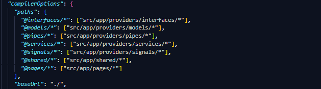

Angular es un framework de código abierto basado en JavaScript que se utiliza para desarrollar aplicaciones web de una sola página (SPA) y aplicaciones web dinámicas. Angular facilita la creación de aplicaciones altamente interactivas y robustas al proporcionar una estructura organizada y herramientas poderosas para desarrolladores.
Angular se centra en la creación de aplicaciones web del lado del cliente y utiliza el patrón de diseño Modelo-Vista-Controlador (MVC) para organizar el código. El enfoque de Angular se basa en los siguientes conceptos clave:
Componentes: Angular divide la interfaz de usuario en componentes reutilizables y autónomos. Cada componente controla una parte específica de la interfaz de usuario y tiene su propia lógica y plantilla.
Directivas: Angular proporciona directivas que extienden el HTML con comportamientos personalizados. Esto permite crear interfaces de usuario dinámicas y reactivas.
Inyección de dependencias: Angular utiliza un sistema de inyección de dependencias para gestionar las dependencias y facilitar la modularidad y la reutilización del código.
Enlace de datos: Angular ofrece enlace de datos bidireccional, lo que significa que los cambios en el modelo de datos se reflejan automáticamente en la vista y viceversa, sin necesidad de escribir código de actualización manualmente.
Rutas: Angular permite el enrutamiento para gestionar la navegación dentro de una aplicación SPA, lo que facilita la creación de aplicaciones con varias vistas y URL amigables para el usuario.
Las ventajas de utilizar Angular incluyen:
Productividad: Angular proporciona una estructura y un conjunto de herramientas que aceleran el desarrollo de aplicaciones web, lo que permite a los desarrolladores ser más productivos.
Mantenimiento: La modularidad de Angular y la separación clara de responsabilidades facilitan el mantenimiento y la escalabilidad de las aplicaciones a medida que crecen.
Rendimiento: Angular utiliza una técnica llamada "detección de cambios" para optimizar el rendimiento de las aplicaciones al actualizar solo las partes necesarias de la interfaz de usuario.
Comunidad y soporte: Angular tiene una comunidad activa y una amplia base de usuarios, lo que significa que puedes encontrar una gran cantidad de recursos, bibliotecas y soluciones en línea.
Pruebas: Angular se diseñó pensando en la prueba, lo que facilita la escritura de pruebas unitarias y de integración para garantizar la calidad del código.
En Angular, los ciclos de vida se refieren a una serie de eventos que ocurren durante el ciclo de vida de un componente. Estos eventos permiten que el componente reaccione y realice tareas específicas en diferentes momentos de su existencia y permiten que los componentes respondan de manera específica a diferentes momentos en su vida útil, lo que facilita la gestión de recursos y la lógica de la aplicación.
Cada uno de estos eventos puede implementarse en un componente Angular mediante la implementación de métodos específicos con los nombres respectivos de cada evento.
ngOnChanges: Este evento se dispara cuando se detectan cambios en las propiedades de entrada (input properties) de un componente. Puedes utilizarlo para realizar acciones cuando los valores de entrada cambian.
ngOnInit: Se ejecuta una vez, justo después de que Angular haya inicializado el componente y establecido sus propiedades. Es común realizar inicializaciones en este evento.
ngDoCheck: Se dispara en cada detección de cambios en la aplicación y permite realizar tareas de detección de cambios personalizadas. Puedes usarlo para optimizar el rendimiento o realizar acciones específicas cuando se producen cambios.
ngAfterContentInit: Se ejecuta después de que Angular haya proyectado el contenido del componente en el DOM (Document Object Model). Es útil cuando necesitas trabajar con contenido proyectado.
ngAfterContentChecked: Se dispara después de que Angular haya comprobado si el contenido proyectado ha cambiado. Puedes utilizarlo para realizar acciones adicionales después de la verificación de contenido.
ngAfterViewInit: Se ejecuta después de que Angular haya inicializado las vistas del componente y las haya renderizado en el DOM. Es adecuado para realizar operaciones de manipulación del DOM.
ngAfterViewChecked: Se dispara después de que Angular haya comprobado si las vistas del componente han cambiado. Puedes usarlo para realizar acciones adicionales después de la verificación de vistas.
ngOnDestroy: Se ejecuta justo antes de que Angular destruya el componente. Puedes utilizarlo para limpiar recursos, cancelar suscripciones y liberar memoria.
Las directivas en Angular son instrucciones que se aplican al DOM para modificar su estructura, comportamiento o apariencia. Estas instrucciones se utilizan para extender el HTML y permiten agregar lógica dinámica y funcionalidad a los elementos HTML de una manera declarativa.
Aquí hay una lista de algunas de las directivas más comunes en Angular:
ngIf: Esta directiva condicional muestra u oculta elementos en función de una expresión evaluada. Por ejemplo, puedes usar ngIf para mostrar un elemento solo si se cumple una condición específica.
ngFor: La directiva ngFor se utiliza para iterar sobre una colección de elementos, como una matriz o una lista, y generar elementos HTML repetitivos basados en la colección.
ngSwitch y ngSwitchCase: Estas directivas se utilizan para crear estructuras de control de conmutación (switch-case) en la plantilla HTML, lo que permite mostrar diferentes elementos o contenido en función de múltiples condiciones.
ngStyle: Esta directiva permite aplicar estilos CSS dinámicamente a elementos basados en propiedades del componente.
ngClass: ngClass se usa para agregar o quitar clases CSS de elementos HTML en función de condiciones específicas en el componente.
ngModel: La directiva ngModel se usa para enlazar datos de un elemento de entrada (input) a una propiedad del componente, lo que permite la comunicación bidireccional entre la vista y el componente.
ngSubmit: Esta directiva se utiliza en formularios para manejar la presentación del formulario cuando se envía, normalmente vinculándola a una función del componente.
ngTemplateOutlet: Permite la inclusión dinámica de plantillas en la vista, lo que es útil para la creación de componentes reutilizables.
ngDisabled, ngReadOnly, ngValue, etc.: Hay muchas otras directivas que pueden aplicarse a elementos HTML para controlar su estado, valor y comportamiento.
Estas son solo algunas de las directivas incorporadas en Angular. Además, Angular permite crear directivas personalizadas para abordar necesidades específicas en tu aplicación. Las directivas son una parte esencial de la programación Angular y permiten la creación de interfaces de usuario dinámicas y altamente interactivas.
Los decoradores en Angular son funciones especiales que se utilizan para modificar clases, métodos, propiedades y otros elementos en tiempo de compilación. Los decoradores se indican con el símbolo @ seguido del nombre del decorador y se colocan justo antes del elemento que se desea decorar.
Angular utiliza decoradores para configurar y extender diversas partes de una aplicación Angular, como componentes, servicios, módulos, inyección de dependencias y más. A continuación, enumero algunos de los decoradores más comunes en Angular:
@Component: Este decorador se utiliza para definir y configurar un componente de Angular. Se coloca encima de la clase de componente y especifica información como la plantilla, los estilos, las propiedades de entrada y salida, entre otros.
@Component({
selector: 'app-mi-componente',
templateUrl: './mi-componente.component.html',
styleUrls: ['./mi-componente.component.css']
})
@Directive: Se usa para definir y configurar una directiva personalizada en Angular. Las directivas personalizadas permiten extender el comportamiento de los elementos DOM en una aplicación Angular.
@Directive({
selector: '[appMiDirectiva]'
})
@Injectable: Este decorador se utiliza para marcar una clase como un servicio inyectable. Angular usa esta información para proporcionar instancias de servicios cuando se les inyecta en componentes u otros servicios.
@Injectable()
@NgModule: Se utiliza para definir y configurar un módulo de Angular. Los módulos son contenedores para componentes, directivas, servicios y otros elementos de la aplicación.
@NgModule({
declarations: [AppComponent, MiComponente],
imports: [RouterModule.forRoot(routes)],
providers: [MiServicio],
bootstrap: [AppComponent]
})
@Input: Este decorador se utiliza para declarar propiedades de entrada en un componente. Permite que el componente reciba datos de su componente padre a través de enlace de datos.
@Input() miPropiedad: string;
@Output: Se usa para declarar propiedades de salida en un componente. Permite que el componente emita eventos que pueden ser escuchados por el componente padre.
@Output() miEvento = new EventEmitter<string>();
@ViewChild y @ViewChildren: Estos decoradores se utilizan para obtener referencias a elementos DOM en la vista del componente. @ViewChild permite obtener una referencia a un solo elemento, mientras que @ViewChildren permite obtener referencias a múltiples elementos.
@ViewChild('miElemento') elemento: ElementRef;
@ViewChildren('items') elementos: QueryList<ElementRef>;
@HostListener: Este decorador se utiliza para escuchar eventos en el elemento hospedador (host) del componente. Permite que el componente responda a eventos del DOM.
@HostListener('click', ['$event']) onClick(event: Event) {
// Manejar el evento de clic
}
@HostBinding: Se utiliza para enlazar propiedades del elemento hospedador del componente. Esto permite que el componente actualice propiedades del elemento DOM.
@HostBinding('style.backgroundColor') backgroundColor: string;
Un proyecto en Angular consta de varios archivos y directorios principales que son esenciales para su funcionamiento.
Aquí tienes una lista de los archivos y directorios más importantes en un proyecto típico de Angular.
src/: Este directorio es el corazón de tu proyecto Angular y contiene la mayoría de los archivos fuente de tu aplicación. Algunos de los archivos y subdirectorios clave en src/ son:
app/: Contiene los componentes, módulos, servicios y otros elementos específicos de tu aplicación.
assets/: Aquí puedes colocar archivos estáticos como imágenes, estilos CSS, archivos JSON, etc., que se incluirán en la construcción de la aplicación.
index.html: El archivo HTML principal de tu aplicación Angular, que actúa como punto de entrada para la carga de la aplicación.
main.ts: El archivo TypeScript principal que inicia la aplicación Angular.
styles.css/scss: El archivo CSS global que se aplica a toda la aplicación por defecto.
angular.json: Este archivo de configuración define la estructura del proyecto, las dependencias, los scripts de construcción, y más. Es esencial para configurar y personalizar tu aplicación Angular.
package.json y package-lock.json: Estos archivos definen las dependencias del proyecto y sus versiones. Puedes utilizarlos para instalar bibliotecas externas, scripts de construcción y herramientas de desarrollo.
tsconfig.json: Este archivo de configuración de TypeScript define cómo se compila el código TypeScript en JavaScript. Contiene configuraciones relacionadas con la compilación, la resolución de módulos y otros ajustes de TypeScript.
node_modules: Este directorio contiene las bibliotecas y dependencias de Node.js que utiliza tu proyecto. Se crea automáticamente cuando instalas las dependencias con npm.
El comando ng generate en Angular, también conocido como ng g (ng generate), es una potente herramienta proporcionada por Angular CLI (Command Line Interface) que te permite generar automáticamente diversos artefactos en tu proyecto Angular.
Aquí están algunas de las cosas que puedes generar con este comando:
Componentes: Puedes generar componentes Angular utilizando el comando ng generate component o ng g c. Esto crea archivos relacionados con un componente, como archivos TypeScript, HTML, CSS y una entrada en el módulo de la aplicación.
ng generate component mi-componente
Directivas: Para generar una directiva personalizada, puedes usar el comando ng generate directive o ng g d. Esto crea archivos relacionados con la directiva en el directorio correcto.
ng generate directive mi-directiva
Pipes: Puedes generar pipes personalizados con el comando ng generate pipe o ng g p. Esto crea archivos relacionados con el pipe y lo declara en el módulo de la aplicación.
ng generate pipe mi-pipe
Servicios: Para generar un servicio en Angular, puedes usar el comando ng generate service o ng g s. Esto crea un archivo TypeScript para el servicio y lo declara en el módulo de la aplicación.
ng generate service mi-servicio
Módulos: Puedes generar módulos personalizados utilizando el comando ng generate module o ng g m. Esto crea un archivo TypeScript para el módulo y, opcionalmente, puede agregar componentes, directivas y otros artefactos relacionados.
ng generate module mi-modulo
Guardias de Rutas: Para generar una guardia de rutas, puedes usar el comando ng generate guard o ng g g. Esto crea un archivo TypeScript para la guardia de rutas y lo declara en el módulo de la aplicación.
ng generate guard mi-guardia
Clases: Puedes generar clases TypeScript utilizando el comando ng generate class o ng g cl. Esto crea un archivo TypeScript para la clase con las propiedades y métodos que especifiques.
ng generate class mi-clase
Interfaz: Para generar una interfaz TypeScript, puedes usar el comando ng generate interface o ng g i. Esto crea un archivo TypeScript para la interfaz con las definiciones de propiedades y métodos.
ng generate interface mi-interfaz
Enum: Puedes generar un enum TypeScript utilizando el comando ng generate enum o ng g e. Esto crea un archivo TypeScript para el enum con los valores enumerados que especifiques.
ng generate enum mi-enum
Módulos de Routing: Para generar un módulo de routing, puedes usar el comando ng generate module con la opción --routing o ng g m con la opción --routing. Esto crea un módulo de routing con archivos relacionados para gestionar las rutas de tu aplicación.
ng generate module mi-modulo-de-routing --routing
Angular posee un sistema de carpetas, el cual corresponde a la estructura base de un proyecto simple, pero a medida de que nuestro proyecto crece, debemos de ser capaz de evitar el desorden en nuestro proyecto para que de esta manera podamos estandarizar rutas de manera sencilla y que nuestro proyecto sea mucho más ordenado e instuitivo para los desarrolladores que se uniran a nuestro proyecto.
En este apartado, explicaremos como manejaremos la estructura de todos aquellos componentes, servicios, interfaces, páginas, etc. que creemos en nuestros proyectos basados en angular. Dentro de la carpeta app/, crearemos 3 carpetas llamadas: pages, providers y shared.
pages/: En esta carpeta dividiremos en sub-carpetas todos los componentes que serán páginas y que serán declaradas en nuestros módulos de rutas por ejemplo:
Crearemos una carpeta llamada home, en esta carpeta crearemos 2 módulos, uno normal y otra de rutas. Posterior a esto crearemos nuestro primer componente llamado home, este componente se importará de manera automática al módulo que hemos creado anteriormente y deberá ser declararla tambien al módulo de rutas de nuestra carpeta raiz llamada home/, si necesitamos componentes hijos, debemos de declararla solamente en el módulo de la carpeta raiz home/, pero no corresponderá a una ruta. Si nuestra página posee más de una ruta, el componente deberá de ser declarada tanto en el módulo principal de la carpeta y en el módulo de rutas.
providers/: En esta carpeta estaran todos aquellos proveedores para el uso y manejo de datos de nuestro proyecto, entre nos encontraremos con las siguientes subscarpetas, la cual nos permitiran dividir todos aquellos archivos y centralizar estos mismos.
guards/: En esta subcarpeta se encontrarán todos nuestros guardianes.
interceptors/: En esta subcarpeta se encontrarán todos nuestros interceptor.
interfaces/: En esta subcarpeta se encontrarán todas nuestras interfaces.
models/: En esta subcarpeta se encontrarán todos nuestros modelos y clases.
pipes/: En esta subcarpeta se encontrarán todos nuestros pipes.
services/: En esta subcarpeta se encontrarán todos nuestros servicios.
signals/: En esta subcarpeta se encontrarán todos nuestros signals.
shared/: En esta carpeta se encontrarán todos aquellos componentes compartidos y módulos, por lo que la subdividiremos en 2 carpetas las cuales seran: components/ y modules/. Tambien dentro de esta carpeta, crearemos un módulo llamado shared.module.ts, en este módulo importaremos y expotaremos todos los componentes y módulos de uso compartidos provenientes de las carpetas shared/components/ y shared/modules/.
components/: Carpeta en donde almacenaremos los componentes compartidos que utilizaremos en nuestro proyecto.
modules/: En esta carpeta encontraremos 3 módulos, los cuales deberán de ser importados en el archivo shared.module.ts, cada uno de estos módulos estan separados para una mayor división los cuales son:
angular.module.ts: En este archivo importaremos y exportaremos todas las dependencias de angular que nuestro proyecto necesitará.
externos.module.ts: En este archivo importaremos y exportaremos todas las librerias externas que instalemos y que nuestro proyecto necesitará.
primeng.module.ts: En este archivo importaremos y exportaremos todas las dependencias de primeng que nuestro proyecto necesitará.
shared.module.ts: En este archivo importaremos y exportaremos los módulos angular.module.ts, externos.module.ts, primeng.module.ts y ademas los componentes compartidos que creemos.
En Angular, las funciones y variables se definen en TypeScript, que es un superset de JavaScript con tipado estático opcional. Esto significa que puedes optar por agregar tipos a tus variables y funciones o no, pero se recomienda encarecidamente tipar todo en Angular por varias razones:
Mejora la Legibilidad y Mantenibilidad del Código: Los tipos proporcionan información explícita sobre el tipo de datos que una variable o función espera o devuelve. Esto hace que el código sea más legible y facilita su mantenimiento, especialmente en proyectos grandes.
Detección Temprana de Errores: El tipado estático de TypeScript permite detectar errores en tiempo de compilación en lugar de en tiempo de ejecución. Esto significa que los errores, como llamar a una función con argumentos incorrectos, se detectan antes de que se ejecute la aplicación.
Intellisense y Autocompletado: Los IDE (Entornos de Desarrollo Integrados) que admiten TypeScript ofrecen características como Intellisense y autocompletado que facilitan la escritura de código, ya que proporcionan sugerencias basadas en tipos.
Refactorización Segura: Cuando cambias nombres de variables o funciones, el tipado ayuda a garantizar que todos los usos de esas variables o funciones se actualicen correctamente.
Documentación Integrada: Los tipos proporcionan documentación integrada en el código, lo que facilita la comprensión de cómo se deben usar las variables y funciones.
Mayor Claridad: Al tipar todo en Angular, se brinda una comprensión más clara de la estructura de datos y la lógica del programa, lo que es especialmente beneficioso cuando varios desarrolladores trabajan en el mismo proyecto.
Escribir funciones en Angular siguiendo buenas prácticas es fundamental para mantener un código limpio, mantenible y eficiente. A continuación, te menciono algunas buenas prácticas que debes tener en cuenta al escribir funciones en Angular:
Nombres Significativos: Usa nombres descriptivos y significativos para tus funciones. Esto facilita la comprensión de lo que hace la función.
// Buena práctica
function calcularTotalFactura() {
// ...
}
// Evitar
function calcular() {
// ...
}
Funciones Pequeñas y Especializadas: Divide funciones largas y complejas en funciones más pequeñas y especializadas. Cada función debe hacer una tarea específica y no debe ser demasiado extensa.
Documentación: Proporciona comentarios y documentación adecuada para tus funciones. Esto ayuda a otros desarrolladores a entender su propósito y cómo deben usarlas.
/**
* Calcula el total de una factura.
* @param {number} subTotal - El subtotal de la factura.
* @param {number} impuestos - El monto de impuestos.
* @returns {number} El total de la factura.
*/
function calcularTotalFactura(subTotal: number, impuestos: number): number {
// ...
}
Evitar Funciones Largas: Las funciones largas son difíciles de mantener y entender. Trata de mantener tus funciones lo más cortas posible y siguiendo el principio de responsabilidad única.
No Repetir Código (DRY): Evita la duplicación de código escribiendo funciones reutilizables y factorizando código común en funciones separadas.
Usar Tipos de Parámetros: Utiliza TypeScript para tipar los parámetros y el valor de retorno de tus funciones. Esto proporciona información sobre el tipo de datos esperados y facilita la detección de errores.
function suma(a: number, b: number): number {
return a + b;
}
Evitar Efectos Secundarios: Las funciones deben ser puras en la medida de lo posible, lo que significa que no deben tener efectos secundarios en el estado de la aplicación. Evita modificar variables o estados fuera de la función de manera inesperada.
Manejo de Excepciones: Si una función puede lanzar excepciones, maneja esas excepciones de manera adecuada y proporciona mensajes de error descriptivos.
Optimización: Si una función es intensiva en términos de recursos (como cálculos costosos), considera la optimización y el rendimiento.
Comentarios de Línea: Utiliza comentarios en línea para aclarar el propósito de secciones importantes o partes complejas del código dentro de la función.
function calcularTotalFactura(subTotal: number, impuestos: number): number {
// Calcula el total sumando el subtotal y los impuestos.
const total = subTotal + impuestos;
return total;
}
Escribir funciones en Angular siguiendo buenas prácticas es fundamental para mantener un código limpio, mantenible y eficiente. A continuación, te menciono algunas buenas prácticas que debes tener en cuenta al escribir funciones en Angular:
Nombres Descriptivos: Elige nombres significativos y descriptivos para tus variables. Un nombre bien elegido comunica de manera clara el propósito y la función de la variable.
// Buena práctica
const totalFactura: number = calcularTotal(subTotal, impuestos);
// Evitar
const tf = calcularT(sub, imp);
Usa Constantes para Valores Inmutables: Si tienes valores que no cambiarán durante la ejecución de tu aplicación, decláralos como constantes utilizando const, tambien puedes declarar variables como readonly. Esto hace que el código sea más legible y ayuda al rendimiento.
const tasaIVA: number = 0.16; // Valor inmutable
readonly urlApi: string = "www.urlapi.cl/apirest/"; // Valor inmutable
Tipado de Variables: Utiliza TypeScript para agregar tipos a tus variables siempre que sea posible. Los tipos proporcionan información útil y previenen errores en tiempo de ejecución.
nombrePage: string = "Login Usuario";
usuarioActivado: boolean = true;
const nombre: string = "Juan";
const edad: number = 30;
Ámbito de Variables (Scope): Limita el ámbito de tus variables tanto como sea posible. Evita la creación de variables globales y utiliza let o const dentro de bloques y funciones cuando sea necesario.
Evita Variables No Inicializadas: Siempre inicializa tus variables antes de usarlas. Las variables no inicializadas pueden llevar a errores difíciles de depurar.
// Buena práctica
fechaNacimiento: Date = new Date();
let resultado: number = 0;
// Mala práctica
fechaNacimiento: Date;
let resultado: number;
// Evitar: resultado no tiene un valor definido
Desestructuración: Utiliza la desestructuración para extraer valores de objetos o arreglos en variables individuales. Esto puede hacer que el código sea más legible y conciso.
const { nombre, edad } = persona;
Nombre de Variables Consistentes: Mantén una convención de nomenclatura coherente en todo tu proyecto para que las variables tengan nombres consistentes y predecibles.
Evita Variables de un Solo Carácter: Evita nombrar variables con un solo carácter, a menos que se utilicen en contextos muy específicos como bucles. Los nombres descriptivos son más legibles.
// Evitar
for (let i = 0; i < elementos.length; i++) {
// ...
}
// Buena práctica
for (let indice = 0; indice < elementos.length; indice++) {
// ...
}
Comentarios Significativos: Agrega comentarios cuando sea necesario para explicar el propósito de una variable o su uso especial.
const precioProducto: number = 123; // Precio unitario del producto
Elimina Variables no Utilizadas: Mantén tu código limpio eliminando variables que ya no se utilizan. Las herramientas de desarrollo suelen advertir sobre variables no utilizadas.
Acceso de variables: No es necesario agregar public explícitamente a menos que desees establecer un modificador de acceso diferente, como private o protected. Estos modificadores se utilizan para controlar la visibilidad y el acceso a las variables dentro de la clase. Por defecto, las variables con el modificador public son accesibles desde cualquier parte de la aplicación, pero esto puede cambiar si se utilizan otros modificadores como private o protected.
Evita variables con múmeros: Los nombres de variables deben ser descriptivos y seguir convenciones de nomenclatura que faciliten la comprensión del código.
// Evitar nombres de variables con números
let datosUsuario2: string; // ¿Qué significa el "2"?
Evita variables con tipado any: El uso excesivo de any puede comprometer algunos de los beneficios clave de TypeScript, como la detección de errores en tiempo de compilación y la mejora de la seguridad y el mantenimiento del código. Aquí hay algunas razones por las que se debe evitar any:
Pérdida de Tipado Estático: TypeScript se basa en la idea de proporcionar tipado estático para ayudar a los desarrolladores a detectar errores en tiempo de compilación. Cuando se usa any, se pierde esta ventaja, ya que una variable de tipo any puede contener cualquier tipo de dato, lo que significa que los errores no se detectarán hasta que se ejecute el código.
Falta de Documentación Implícita: Cuando se utiliza any, se pierde la documentación implícita que los tipos proporcionan en el código. Esto hace que sea más difícil entender cómo se deben usar las variables y puede llevar a confusión.
Mayor Probabilidad de Errores en Tiempo de Ejecución: Al permitir cualquier tipo de valor en una variable any, aumenta la probabilidad de que ocurran errores en tiempo de ejecución cuando se realizan operaciones incompatibles con el tipo de datos real.
Dificultad en el Mantenimiento: El código que utiliza any puede ser más difícil de mantener, ya que es menos explícito sobre los tipos de datos esperados. Esto puede causar problemas cuando otros desarrolladores trabajan en el proyecto o cuando se realizan cambios en el código en el futuro.
Menos Ayuda de Herramientas de Desarrollo: Las herramientas de desarrollo, como los IDE, ofrecen características de ayuda basadas en tipos. Al usar any, se pierde la ventaja de estas características, como el autocompletado y la validación de tipos.
El uso de alias de ruta en Angular es una práctica recomendada, ya que simplifica las importaciones y mejora la organización y la legibilidad del código. Facilita el mantenimiento y la escalabilidad del proyecto, y reduce la posibilidad de errores relacionados con las rutas relativas. Establecer alias de ruta en Angular proporciona varias ventajas:
Facilita las Importaciones: Los alias de ruta permiten importar módulos y archivos utilizando rutas más cortas y legibles en lugar de rutas relativas largas. Esto hace que las importaciones sean más claras y concisas.
// Sin alias de ruta
import { FuncionesService } from '../../../providers/services/funciones.service';
// Con alias de ruta
import { FuncionesService } from '@services/funciones.service';
Mantiene un Código más Limpio: Al utilizar alias de ruta, el código se ve más limpio y evita el uso de rutas relativas complejas, lo que mejora la legibilidad y reduce la posibilidad de errores en las rutas.
Evita Problemas de Rutas Relativas: Evita problemas potenciales relacionados con las rutas relativas, especialmente cuando mueves archivos o carpetas en tu proyecto. Los alias de ruta te ayudan a eliminar la necesidad de ajustar rutas relativas.
Flexibilidad en la Estructura del Proyecto: Los alias de ruta permiten una mayor flexibilidad en la organización de tu proyecto, ya que no estás limitado por la ubicación física de los archivos. Puedes reorganizar la estructura de carpetas sin cambiar todas las importaciones.
Mejora la Portabilidad: Hace que tu código sea más portable, ya que las dependencias de rutas relativas son específicas de la estructura del proyecto. Los alias de ruta ayudan a reducir esta dependencia.
Configuración Personalizada: Puedes personalizar los alias de ruta según tus necesidades específicas, lo que te permite definir nombres significativos para los directorios o módulos que utilizas con frecuencia.
Integración con Webpack: Los alias de ruta son compatibles con Webpack y pueden ser configurados en el archivo tsconfig.json, en el apartado de paths de tu proyecto Angular para que Webpack maneje las resoluciones de ruta adecuadamente.
La Refactorización es el proceso de reestructurar el código fuente existente sin cambiar su comportamiento externo para mejorar su calidad interna. El objetivo principal de la refactorización es hacer que el código sea más limpio, mantenible, legible y eficiente sin cambiar su funcionalidad. La refactorización puede abordar varios aspectos del código, como su estructura, nombres de variables, funciones, clases, y la eliminación de código duplicado o no utilizado.
En un proyecto de Angular, la refactorización es una práctica importante y se debe realizar en varios casos:
Mejorar la Legibilidad: Cuando el código se vuelve difícil de entender debido a nombres de variables poco descriptivos, estructuras complejas o falta de comentarios. La refactorización puede hacer que el código sea más claro y comprensible.
Eliminar Duplicación de Código: Si encuentras fragmentos de código duplicados en diferentes partes de tu proyecto, es una señal clara de que puedes refactorizar ese código en una función o módulo reutilizable para evitar la duplicación.
Optimizar el Rendimiento: Cuando identificas partes del código que son ineficientes en términos de rendimiento, puedes refactorizar esas secciones para mejorar la velocidad y la eficiencia de tu aplicación.
Mejorar la Mantenibilidad: A medida que el proyecto crece, es común que se vuelva más difícil de mantener. La refactorización puede ayudar a mantener el código limpio y estructurado a medida que agregas nuevas características o funcionalidades.
Aplicar Mejores Prácticas: A medida que aprendes y evolucionas como desarrollador, es posible que quieras aplicar mejores prácticas o patrones de diseño que no se utilizaron inicialmente en el proyecto. La refactorización te permite hacerlo de manera controlada.
Preparar para Cambios Futuros: Si anticipas cambios en los requisitos o la arquitectura de tu proyecto, puedes refactorizar el código para hacerlo más flexible y adaptable a los cambios futuros.
Mejorar la Escalabilidad: Cuando el proyecto necesita crecer y manejar una mayor complejidad, la refactorización puede ayudar a modularizar y organizar el código de una manera que facilite la escalabilidad.
Corregir Errores y Problemas: Si identificas errores o problemas en el código existente, la refactorización puede ser necesaria para solucionarlos de manera eficaz.
Es importante tener en cuenta que la refactorización debe llevarse a cabo de manera planificada y controlada. Aquí hay algunas pautas para realizar refactorizaciones efectivas en un proyecto de Angular:
Realiza Pruebas Unitarias: Antes y después de la refactorización, asegúrate de tener pruebas unitarias que verifiquen que la funcionalidad sigue siendo la misma. Esto te ayuda a detectar problemas rápidamente.
Utiliza Herramientas y Ayudas: Las herramientas de refactorización integradas en los IDE de desarrollo, como Visual Studio Code, pueden ayudarte en el proceso. También puedes utilizar linters y analizadores de código estático para identificar áreas que necesitan atención.
Refactoriza Pequeños Pasos: No intentes refactorizar todo el proyecto de una vez. Realiza cambios pequeños y verifica que no se rompa la funcionalidad con cada paso.
Mantén un Control de Versiones: Utiliza un sistema de control de versiones (como Git) para realizar un seguimiento de los cambios y poder volver atrás si es necesario.
Colabora con el Equipo: Comunica tus intenciones de refactorizar con tu equipo y asegúrate de que todos estén en la misma página.
La refactorización es una práctica continua en el desarrollo de software y puede mejorar significativamente la calidad y la mantenibilidad de tu proyecto de Angular a lo largo del tiempo.
En Angular, existen dos enfoques principales para trabajar con formularios: los Template-driven forms (formularios basados en plantillas) y los Reactive forms (formularios reactivos). Cada enfoque tiene sus propias características y casos de uso.
La lógica está en el HTML.
Facilidad de Uso: Los formularios basados en plantillas son más fáciles de crear y mantener en aplicaciones pequeñas o con formularios simples. Son especialmente útiles cuando se necesita implementar formularios de manera rápida y sencilla.
Configuración en la Plantilla HTML: La mayoría de la configuración del formulario se realiza directamente en la plantilla HTML utilizando directivas como ngModel. Esto significa que la lógica del formulario se encuentra en el archivo HTML.
Validación Declarativa: La validación de los datos de entrada se configura mediante directivas de validación en la plantilla HTML. Esto puede hacer que la validación sea más fácil de entender y mantener.
Menos Control Programático: En los formularios basados en plantillas, se confía en gran medida en Angular para gestionar el estado del formulario y las validaciones. Esto significa que puede haber menos control programático directo sobre el formulario.
Bueno para Casos Sencillos: Los formularios basados en plantillas son ideales para casos sencillos en los que la lógica del formulario es simple y no se requieren muchas validaciones o lógica personalizada.
La lógica está en el componente.
Mayor Control Programático: Los formularios reactivos proporcionan un mayor control programático sobre la lógica del formulario. La configuración y la gestión del formulario se realizan principalmente en el código TypeScript.
Flexibilidad: Son más flexibles y adecuados para formularios complejos y dinámicos, donde se necesita lógica personalizada y validaciones complejas.
Validación Programática: La validación se realiza programáticamente en el código TypeScript, lo que brinda un mayor control y la capacidad de implementar validaciones personalizadas.
Uso de Observables: Los formularios reactivos utilizan Observables de RxJS para rastrear y reaccionar a los cambios en los valores del formulario. Esto facilita la manipulación de datos asincrónicos y la respuesta a eventos del formulario.
Bueno para Aplicaciones Grandes y Complejas: Son ideales para aplicaciones grandes o formularios complejos, donde se requiere un control detallado y una lógica personalizada.
Manejo de Grupos y Arrays de Controles: Los formularios reactivos permiten el manejo de grupos de controles y arrays de controles de una manera más eficiente.
En resumen, la elección entre formularios basados en plantillas (Template-driven forms) y formularios reactivos (Reactive forms) depende de las necesidades específicas de tu aplicación y el tipo de formulario que estás creando. Para formularios simples y rápidos, los formularios basados en plantillas son adecuados. Para formularios más complejos y personalizados, los formularios reactivos ofrecen un mayor control y flexibilidad. En muchos casos, las aplicaciones pueden utilizar ambos enfoques según sea necesario en diferentes partes de la aplicación.
Un Template-driven form (formulario basado en plantillas) en Angular es un enfoque para crear formularios en una aplicación Angular utilizando principalmente la plantilla HTML para definir la estructura y la lógica del formulario. Este enfoque hace un uso extensivo de directivas estructurales y de formularios proporcionadas por Angular, como ngForm, ngModel, ngSubmit, y otras, para crear y gestionar el formulario.
Aquí hay algunos aspectos clave de los Template forms en Angular:
Plantilla HTML: La estructura del formulario se define en la plantilla HTML utilizando elementos HTML tradicionales como <form>, <input>, <select>, <textarea>, entre otras. Las directivas de Angular se utilizan para agregar lógica y comportamiento a estos elementos.
Directiva ngForm: Se utiliza la directiva NgForm para envolver el formulario HTML y crear una instancia de NgForm. Esto permite el seguimiento de los controles del formulario y la gestión del estado del formulario.
Directiva ngModel: La directiva ngModel se utiliza para establecer una vinculación de datos de dos vías entre los elementos de entrada HTML (como <input>, <select>, <textarea>, entre otros) y las propiedades del modelo en el componente TypeScript. Esto permite que los datos fluyan entre la vista y el componente automáticamente.
Validación Declarativa: La validación del formulario se define en la plantilla HTML utilizando directivas de validación como required, minLength, maxLength, pattern, etc. Estas directivas permiten establecer reglas de validación declarativas en los elementos de entrada.
Manejo de Envío: Se utiliza la directiva ngSubmit para manejar la acción de envío del formulario. Cuando el usuario envía el formulario, se ejecuta una función especificada en el componente TypeScript.
Bueno para Casos Sencillos: Los Template-driven forms son ideales para formularios sencillos o cuando se necesita una implementación rápida y sencilla sin mucha lógica personalizada.
Menos Control Programático: En este enfoque, gran parte de la lógica del formulario se maneja automáticamente por Angular, lo que significa que hay menos necesidad de escribir código TypeScript para el manejo del formulario.
Un ejemplo de un formulario basado en plantillas en Angular podría verse así:
<form #miForm="ngForm" (ngSubmit)="enviarDatos()">
<input type="text" name="nombre" [(ngModel)]="modelo.nombre" required>
<input type="email" name="correo" [(ngModel)]="modelo.correo" required email>
<button type="submit">Enviar</button>
</form>
En este ejemplo, [(ngModel)] se utiliza para establecer una vinculación de datos de dos vías, y las directivas de validación como required y email se aplican a los campos de entrada.
En resumen, los Template-driven forms son una forma conveniente de crear formularios en Angular, especialmente para formularios simples y rápidos. Están basados en la manipulación de la plantilla HTML y la utilización de directivas de Angular para definir la estructura y la lógica del formulario.
Los Reactive Forms (formularios reactivos) en Angular es un enfoque para crear formularios en una aplicación Angular utilizando principalmente el código TypeScript para definir la estructura y la lógica del formulario. A diferencia de los Template-driven Forms, donde gran parte de la lógica se coloca en la plantilla HTML, los Reactive Forms se basan en la manipulación programática de formularios y hacen un uso extensivo de las clases proporcionadas por Angular.
Aquí hay algunos aspectos clave de los Reactive Forms en Angular:
Formulario Control: En los Reactive Forms, se crean instancias de formularios como objetos TypeScript utilizando las clases FormGroup, FormControl, y FormArray. Estos objetos representan la estructura del formulario y sus controles.
Controladores de Formulario: Cada elemento de entrada en el formulario, como un campo de texto o un botón de opción, se representa como un objeto FormControl. Los FormControl gestionan el estado del elemento de entrada, incluyendo su valor y estado de validación.
FormGroup: Un FormGroup es un conjunto de FormControls que representan un conjunto de campos relacionados en el formulario. Proporciona métodos para realizar validaciones y realizar seguimiento del estado general del grupo.
FormArray: Un FormArray es una matriz de FormControls que se utiliza para manejar múltiples elementos de entrada, como una lista de elementos. Es útil cuando necesitas trabajar con múltiples controles dinámicos.
Validación Programática: La validación de datos de entrada se realiza programáticamente en el código TypeScript utilizando funciones y reglas de validación personalizadas. Esto brinda un mayor control sobre las reglas de validación.
Reactivo a Cambios: Los Reactive Forms son altamente reactivos. Puedes responder a los cambios en los valores de los formularios utilizando observables de RxJS, lo que facilita el manejo de eventos asincrónicos y actualizaciones dinámicas.
Flexibilidad: Son ideales para formularios complejos o dinámicos, donde se necesita un mayor control, validaciones personalizadas o lógica específica.
Uso de Observables: Los Reactive Forms utilizan Observables para rastrear y responder a los cambios en los valores del formulario. Esto facilita la detección de cambios y la interacción con los datos del formulario de manera reactiva.
Un ejemplo de un Reactive Form en Angular podría verse así en TypeScript:
import { Component } from '@angular/core';
import { FormBuilder, FormGroup, Validators } from '@angular/forms';
@Component({
selector: 'app-mi-componente',
templateUrl: './mi-componente.component.html',
})
export class MiComponente {
miFormulario: FormGroup;
constructor(private formBuilder: FormBuilder) {
this.miFormulario = this.formBuilder.group({
nombre: ['', Validators.required],
correo: ['', [Validators.required, Validators.email]],
});
}
enviarDatos() {
if (this.miFormulario.valid) {
// Realizar acción con los datos del formulario
}
}
}
<form [formGroup]="miFormulario" (ngSubmit)="enviarDatos()">
<div>
<label for="nombre">Nombre:</label>
<input type="text" id="nombre" formControlName="nombre">
<div *ngIf="miFormulario.get('nombre').invalid && miFormulario.get('nombre').touched">
<div *ngIf="miFormulario.get('nombre').hasError('required')">El nombre es obligatorio.</div>
</div>
</div>
<div>
<label for="correo">Correo Electrónico:</label>
<input type="email" id="correo" formControlName="correo">
<div *ngIf="miFormulario.get('correo').invalid && miFormulario.get('correo').touched">
<div *ngIf="miFormulario.get('correo').hasError('required')">El correo es obligatorio.</div>
<div *ngIf="miFormulario.get('correo').hasError('email')">El correo no es válido.</div>
</div>
</div>
<button type="submit" [disabled]="miFormulario.invalid">Enviar</button>
</form>
En este ejemplo, se crea un formulario reactivamente utilizando FormGroup, FormControl, y Validators para definir reglas de validación.
En resumen, los Reactive Forms en Angular son una forma programática y altamente flexible de crear formularios, ideales para formularios complejos o casos donde se necesita un mayor control sobre la lógica del formulario y las validaciones.
En Angular, @Input y @Output son dos decoradores clave que se utilizan para facilitar la comunicación entre componentes, especialmente cuando se trabaja con componentes anidados o componentes que necesitan compartir datos y eventos entre sí.
El decorador @Input se utiliza para exponer propiedades de un componente hijo para que puedan ser pasadas como datos desde un componente padre.
Permite que el componente padre envíe datos al componente hijo.
Puedes decorar una propiedad en el componente hijo con @Input para convertirla en una propiedad que puede ser asignada desde el componente padre.
Cuando el componente padre asigna un valor a la propiedad decorada con @Input, ese valor se refleja automáticamente en el componente hijo.
Ejemplo:
import { Component, Input } from '@angular/core';
@Component({
selector: 'app-hijo',
template: '<p> { { mensaje } } </p>'
})
export class HijoComponent {
@Input() mensaje: string;
}
El decorador @Output se utiliza para emitir eventos desde un componente hijo para que puedan ser escuchados y manejados por un componente padre.
Permite que el componente hijo notifique al componente padre sobre eventos importantes o cambios en su estado.
Debes decorar una propiedad en el componente hijo con @Output y asignarle una instancia de EventEmitter para poder emitir eventos.
El componente padre puede suscribirse a estos eventos utilizando el binding de eventos en la plantilla HTML.
Ejemplo:
import { Component, Output, EventEmitter } from '@angular/core';
@Component({
selector: 'app-hijo',
template: '<button (click)="emitirMensaje()">Enviar Mensaje</button>'
})
export class HijoComponent {
@Output() mensajeEnviado = new EventEmitter<string>();
emitirMensaje() {
this.mensajeEnviado.emit('Hola desde el hijo');
}
}
En el componente padre:
<app-hijo (mensajeEnviado)="manejarMensaje($event)"></app-hijo>
import { Component } from '@angular/core';
@Component({
selector: 'app-padre',
template: '<app-hijo></app-hijo>'
})
export class PadreComponent {
manejarMensaje(mensaje: string) {
console.log(`Mensaje recibido en el componente padre: ${mensaje}`);
}
}
En resumen, @Input se utiliza para pasar datos desde un componente padre a un componente hijo, mientras que @Output se utiliza para emitir eventos desde un componente hijo para que el componente padre los escuche y responda. Estos decoradores son fundamentales para la comunicación entre componentes en Angular.
Un signal es un envoltorio alrededor de un valor que puede notificar a los consumidores interesados cuando ese valor cambia. Los signals pueden contener cualquier valor, desde primitivas simples hasta estructuras de datos complejas.
El valor de un signal siempre se lee a través de una función captadora, que permite a Angular rastrear dónde se utiliza la señal.
Los signals pueden ser de escritura o de sólo lectura.
Uso:
La manera de utilización aun no esta definida, ya que se encuentra aun en modo de develop, es por este motivo que se presentará un caso de uso basado en store.
Creación de store signal: Dentro de una carpeta llamada signal ubicada en providers/signals, se creará un nuevo archivo llamado signal.store.ts (El nombre puede variar). importaremos signal desde @angular/core y crearemos las variables que utilizacermos de tipo signal.
import { signal, WritableSignal } from '@angular/core';
// Variable de tipo WritableSignal numérico, inicializada con
// un valor signal numérico en 0.
const sumaSignal: WritableSignal<number> = signal<number>(0);
export {
sumaSignal
}
Importación en el componente: En el componente en el que se utilizará este signal, importaremos el store anteriormente creado y crearemos 2 funciones, una en la cual llamaremos al valor del signal y otra para modificar dicho valor.
import { Component, WritableSignal } from '@angular/core';
import { sumaSignal } from '@signals/signal.store';
@Component({
selector: 'app-padre',
templateUrl: './padre.component.html',
styleUrls: ['./padre.component.scss']
})
export class PadreComponent {
// Función para visualizar el signal
get signalSuma(): WritableSignal<number>{
return sumaSignal;
}
// Función que permite asignar un valor al signal
realizarSumaSignal(): void{
const suma: number = 40;
sumaSignal.set(suma);
}
}
Como se puede observar en el fragmento de código, la función llamada realizarSumaSignal() es la encargada de asignar el valor suma al signal que hemos creado mediante el método set() de esta misma y para mostrar los datos en el HTML, hemos creado una función de que retorna nuestro signal llamada get signalSuma(), esta función es opcional, pero es una muy buena práctica su utilización. Para que estos signals sean visualizados en el HTML, debemos de llamarlo como una variable normal, pero con parentesis de esta manera:
<p> { { signalSuma() } } </p>
Asignación de valores: Los signals, poseen hasta el momento diversas funciones para la asignación de datos, las cuales pueden ser las siguiente:
Inicialización: Todo sigan debe de ser inicializado, aquí un ejemplo:
const count = signal(0);
// Signals are getter functions - calling them reads their value.
console.log('The count is: ' + count());
Actualización: Para cambiar el valor del signals, se utilizará la función .set(). o se puede utilizar .update() para calcular un nuevo valor a partir del anterior.
count.set(3);
// Incrementar el contador en 1
count.update(value => value + 1);
Actualización matriz: Cuando se trabaja con signals que contienen objetos, a veces resulta útil mutar ese objeto directamente. Por ejemplo, si el objeto es una matriz, es posible que desee insertar un nuevo valor sin reemplazar la matriz por completo. Para realizar un cambio interno como este, use el método .mutate.
const todos = signal([{title: 'Learn signals', done: false}]);
todos.mutate(value => {
// Cambie el primer TODO en la matriz a 'done: true' sin reemplazarlo.
value[0].done = true;
});
Effects: Las señales son útiles porque pueden notificar a los consumidores interesados cuando cambian. Un efecto es una operación que se ejecuta cada vez que uno o más valores de señal cambian. Los efectos siempre se ejecutan al menos una vez. Cuando se ejecuta un efecto, rastrea cualquier valor de señal leído. Siempre que cualquiera de estos valores de señal cambie, el efecto se ejecutará nuevamente.
constructor(){
effect(() => {
console.log(`El valor del signal a cambiado: ${sumaSignal()}`);
});
}